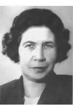

Валентина Олександрівна Осєєва-Хмельова (15 квітня (28 квітня) 1902, Київ — 5 липня 1969) — радянська дитяча письменниця. Лауреат Сталінської премії третього ступеня (1952).
Народилася в сім'ї інженера. Після закінчення середньої школи до 1923 року навчалася на акторському факультеті Київського інституту ім. М. В. Лисенка (не закінчила). Пізніше сім'я переїхала в Москву.
У 1924–1940 роках працювала педагогом і вихователем у дитячих комунах та приймальниках для безпритульних дітей. Під час евакуації в роки Радянсько-німецької війни працювала вихователькою в дитячому садку в Башкирській АРСР. З 1952 року проживала в селищі Ізюмівка, неподалік від міста Старий Крим. Похована в Москві на Ваганьковському кладовищі. В 1940 вийшла перша книга "Рудий кіт". Потім були написані збірники оповідань для дітей "Бабка", "Чарівне слово", "Батьківська куртка", "Мій товариш", книга віршів "Єжинка", повість "Васьок Трубачов і його товариші" з 3-х частин (1947–1951). В 1959 вийшла повість "Дінка", а трохи пізніше "Дінка прощається з дитинством", що мають автобіографічні корені. Частина творів була екранізована.